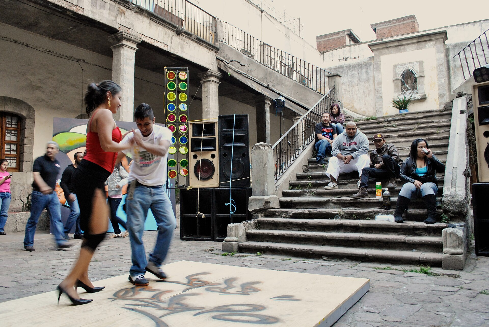

Urbanización
Ciudades colombianas
Bogotá
Capital política y cultural, centro administrativo y principal nodo universitario del país.
Medellín
Transformó su historia industrial, sus sistemas de transporte y su producción cultural.
Cali
Capital musical del Pacífico colombiano con influencias afrolatinas y salseras.
Barranquilla
Puerto y centro cultural conocido por su carnaval y diversidad cultural del Caribe.
Las ciudades crecieron con migración rural, desplazamiento forzado, industrialización y expansión urbana. Sus barrios populares construyeron redes sociales, comercio, música y asociaciones comunitarias.
Diversidad
Comunidades y pertenencias
Los pueblos indígenas, las comunidades afrocolombianas, los raizales, las comunidades gitanas y campesinas mantienen lenguas, territorios, religiones y prácticas propias. La diversidad no debe presentarse como folclor: es parte de derechos colectivos y proyectos sociales.
Las mujeres han ampliado su participación política, laboral y social. Los movimientos sindicales y estudiantiles han defendido educación, derechos laborales y transformación democrática.
Sonidos regionales
Música colombiana
Cumbia
Género de origen indígena, africano y europeo desarrollado en la Costa Caribe.
Vallenato
Tradición de ritmos, acordeón y canto vinculada a la historia narrada de la región Caribe.
Bambuco
Música y danza asociada a regiones andinas y fiestas populares.
Currulao
Tradición musical del Pacífico basada en marimba, percusión y cantos ancestrales.
Salsa y rock
Escenas urbanas de Cali, Bogotá y otras ciudades transformaron músicas de origen diverso.
Hip-hop
El rap y el movimiento urbano han creado memoria social y crítica política desde barrios populares.


Arte y letras
Literatura, pintura y arquitectura
La literatura colombiana incluye a Soledad Acosta, José Eustasio Rivera, Germán Arciniegas, Gabriel García Márquez y generaciones contemporáneas. Sus obras representan regiones, guerras, memorias y transformaciones sociales.
La pintura, la escultura y la fotografía han sido medios para interpretar paisaje, identidad y violencia. La arquitectura combina tradición colonial, modernismo, obras públicas contemporáneas y prácticas locales.
Deporte y medios
Educación, fútbol y comunicación
La educación pública universitaria fue escenario de movimientos estudiantiles y debates sobre acceso, financiación y autonomía. La televisión, el cine, la radio y las redes sociales han cambiado la forma en que las personas conocen y participan en la vida nacional.
El fútbol conecta regiones y generaciones, aunque también refleja desigualdades sociales y comerciales. La religión y las iglesias influyeron en educación, política y organizaciones comunitarias.
Página relacionada
Economía de Colombia
Consulta sectores productivos, empleo, desigualdad, inflación y crecimiento económico.
Abrir Economía de Colombia →Archivo cultural